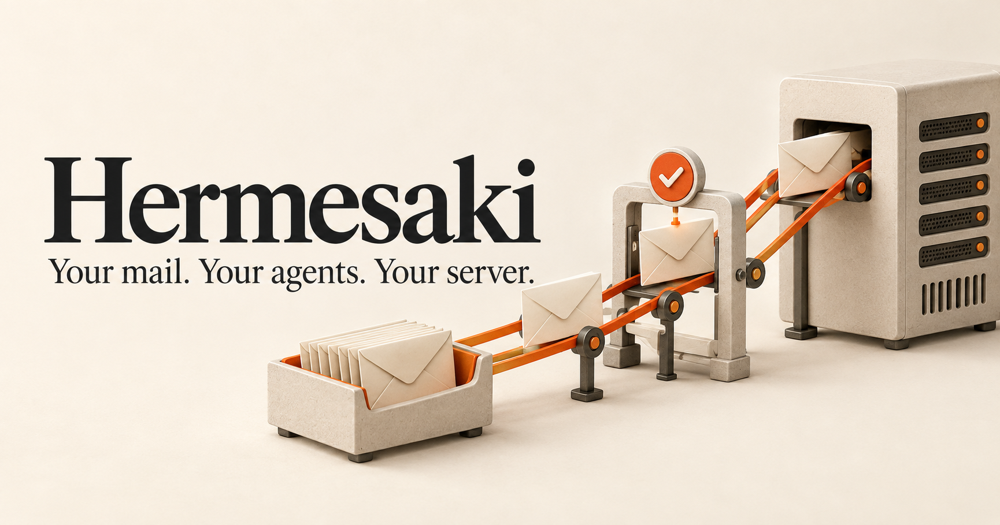

Open your mail.
Like normal.
A browser inbox for reading, attachments and replies. Roundcube handles the familiar bits.
Explore the inbox interface ↗YOUR OWN LITTLE MAILROOM
An inbox you can open. An API your agents can use. All running on a server you control.
Self-hosted. Built on Stalwart + Roundcube.
Hey, can you check when my order is arriving? Thanks!
Interactive illustration. No emails are sent.
LESS HANDING THINGS OVER
Let them read, search and prepare a reply. Give each agent the access it needs. Keep sending a separate decision.
A browser inbox for reading, attachments and replies. Roundcube handles the familiar bits.
Explore the inbox interface ↗Connect over API or MCP. Start with read-only access to one mailbox, then add permissions when you need them.
See the connection paths ↗Mail, queues and encrypted backups under your control. Test with captured email before going live.
See backup and recovery ↗A SMALL TOOLKIT. REAL POSSIBILITIES.
Get a real mail environment running locally.
make dev
make seed
make testA browser inbox, scoped API, MCP and a local mail catcher. Fictional accounts are ready to try.

A REPO YOU CAN MAKE YOUR OWN
Real services underneath. A small, readable product layer on top. Bring your own agent, keep your own mail.
Look inside the repository ↗START ON YOUR OWN MACHINE
Clone the repo. Start the stack. Send your first local test.
Requires Docker Compose, Python and access to the private repository.
Open the repo ↗